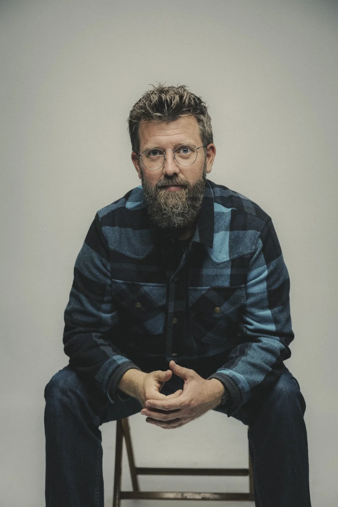
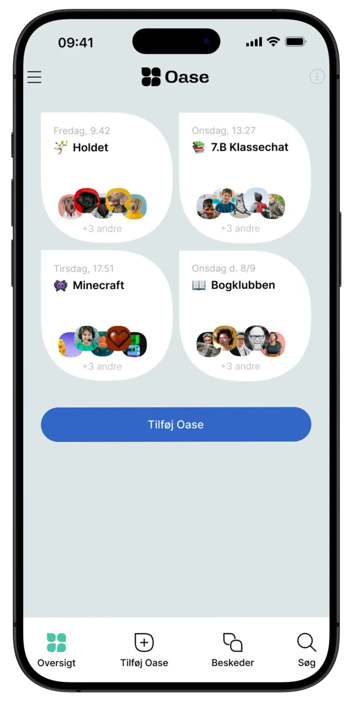

Hej, jeg hedder
Anders Lemke-Holstein

Jeg er civilingeniør og tech-iværksætter. Men først og fremmest, er jeg far til tre, og optaget af, at skabe de bedst mulige rammer for deres digitale liv.
Når jeg udvikler software, insisterer jeg på, at teknologi skal arbejde for os mennesker. Ikke den anden vej rundt.
Lige nu bygger jeg
Oase
Oase er en app og kommunikationsplatform jeg står bag. Der manglede en chat-app til grupper uden fastholdende algoritmer, hvor man ikke bliver kontaktet af fremmede, og som virker på alle platforme.
Hvis du er klar til at prøve noget nyt, ændre dine vaner, og få dine nære fællesskaber over på en platform som faktisk godt vil have, at I mødes i den virkelige verden — så prøv Oase.

Kontakt
- anders@lemke.dk
- Telefon
- 20 44 21 27
- linkedin.com/in/anderslemke